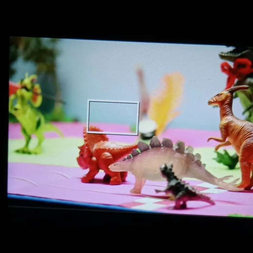

Hola!
Mi nombre es Gea Ainat Osornio Vargas. Actualmente soy estudiante de la Licenciatura en Diseño de la Comunicación Gráfica en la Universidad Autónoma Metropolitana, unidad Azcapotzalco. Desde muy temprana edad descubrí una afinidad natural por el arte, los libros, la música y el mundo visual que me rodeaba. Esta sensibilidad por los detalles, el color y la narrativa visual me llevó a elegir una carrera que combinara creatividad con comunicación, y así encontré en el diseño mi vocación. Me apasiona crear proyectos que comuniquen con claridad, emoción y propósito y me interesa especialmente el diseño editorial y la fotografía como medios para contar historias y construir identidades visuales sólidas y significativas.
Skills
Una parte integral de estudiar en la UAM es aprender mas alla de los ordenadores, dandonos experiencia en talleres y museos, buscando una experiencia integral en el campo de diseño.
- Adobe Photoshop
- Adobe Illustrator
- Adobe InDesign
- Adobe Premiere
- Adobe Audition
- Fotografía en exteriores
- Fotografía editorial
- Animación en stop-motion
- Sistemas de impresión tradiciónal